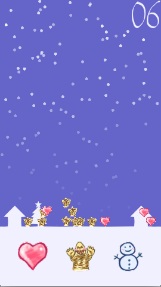

しょぼつむ #syobochim
これは しょぼちむ Advent Calendar 2014 の24日目です。
しょぼちむアドベントカレンダー、作っていただけたらきっと嬉しいんだろうけど、自分で作るのは違う気がする！！！！
— しょぼちむ@精進します (@syobochim) 2014, 11月 3というツイートを見て軽い気持ちで作ってみましたが蓋を開けると色んな人が色んな事を書いており、 しょぼちむ本当に良かったね！っていう感じでいっぱいの楽しいアドベントカレンダーもはや24日目となりました。
「しょぼつむ」作りました
さて、今回私はしょぼちむをモチーフにして「しょぼつむ」というゲーム作ってみました。 ゲームのイメージを貼ります。
ルールは至ってシンプルです。 画面の下の方に見えているハート・レッドキング・雪だるまを指で弾くと飛んで行って着地します。 制限時間10秒の間に次々と弾いて高く積み上げてください。 雪降るクリスマスの街に積み上がった分だけ女子力が手に入ります。 という、なんかもうこの時点でしょぼちむすまん、と言いたくなる感じのコンセプトです。
積むものによってポイントが異なります。
- ハート：5ポイント
- レッドキング：2ポイント
- 雪だるま：1ポイント
ハートはポイント稼げますが落下速度がのんびりしています。
野良apkファイルを用意しました。 良ければ遊んでみてください。
ソースコードはこちら。
gradlew android:build したらapkをビルドできます。
ちなみに実機で確認していません(ｷﾘｯ
ゲームを作ってみて
すごく簡単なゲームですがゲーム作り初心者には難しい部分もありました。
しかし技術的な難しさよりもゲームシステムのアイデアが出なかったり絵の準備に手間取ってしまいました。
アドベントカレンダーのネタを考えていたときに「しょぼつむ」という言葉が先に浮かんだので何かを積むものにしようとは思っていたのですが、 ぷよぷよのような落ちものゲームにしようかなー、 それとも将棋崩しのようなものも積むという基本コンセプトからは逸脱しないかなー、 など悩みました。
悩みはしましたがなんせ普段はWebアプリでCRUDの亜種みたいなのばっか作ってる身としては凝った事をやるとしぬと思い、 シンプルなルールになるよう考えた末に前記のようなものになりました。
コーディングも普段やってる事とは異なりましたがなるべく高レベルAPIを利用する事で なんとか形に出来ました。
TODO
とりあえず動きますが未完成です。 次にTODOを記載します。
- SEとBGMを付けたい
- ヘルプを組込みたい。ブログに操作方法書くとかアレ
- フェードアウト時、各パーツの枠のちらつきをなんとかしたい
- 画像のロードを非同期にしたい
- 結果画面がおとなしいからもっとわちゃわちゃさせたい
- ソースコードにコメントほぼないの、たぶん後で困るから覚えてるうちに書いておきたい
特にBGMはせっかくなので作曲したいと考えていましたがそんな時間はなかった（まがお
そもそもパソコンで曲作るのってどうしたら良いですかね？ 教えてえろいひと！（他力本願
技術的な話
「しょぼつむ」はlibGDXで開発をしました。
libGDXはJavaで書かれたゲームフレームワークで、ささーっとコードを書くとそのコードをデスクトップアプリ、Androidアプリ、iOSアプリなどにビルド出来るスゴいやつです。
私はAndroidスマホ持っていないしiOS開発者ライセンスも持っていないのでプライベートでスマホアプリ開発はしないのですが、 libGDXであればJava SEで書いてデスクトップで動かせるので私のような者であってもスマホアプリ開発が出来てしまいました。
libGDXの事を詳しく知りたい方は GitHubにあるlibGDXのWiki を読むか「libGDX しんさん」でググると良いでしょう。
まとめ
- ゲーム作るの難しい
- libGDXすごく良い
明日のアドベントカレンダーは
しょぼちむの番でフィナーレ ですね！